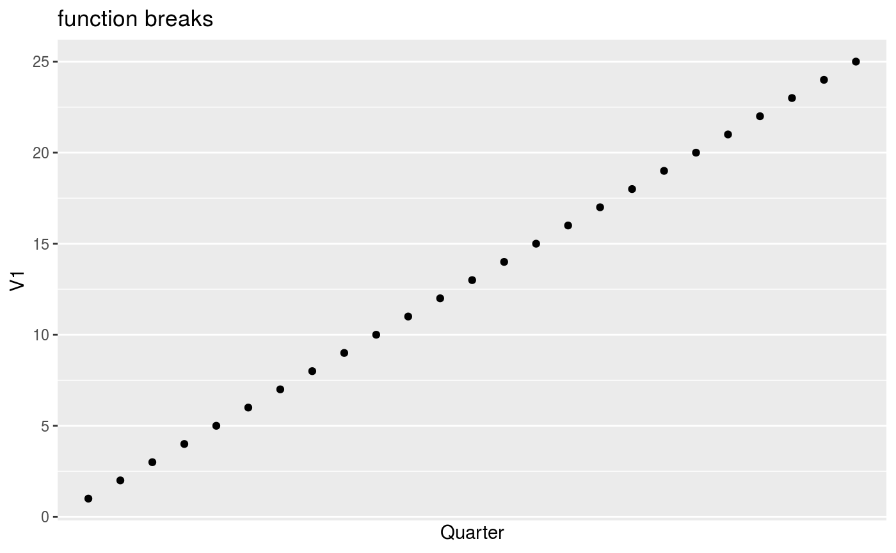

The scale_*_date_** functions provide nice defaults for plotting
the appropriate date_xx subclass, but come with a limited number of
configuration options. If you require more finetuning, you can convert
date_xx vectors with as.Date() and use ggplot2::scale_x_date().
scale_x_date_yq( name = "Quarter", breaks = date_yq_breaks(), labels = ggplot2::waiver(), limits = NULL, position = "bottom" ) scale_y_date_yq( name = "Quarter", breaks = date_yq_breaks(), labels = ggplot2::waiver(), limits = NULL, position = "left" ) scale_x_date_ym( name = "Month", breaks = date_ym_breaks(), labels = ggplot2::waiver(), limits = NULL, position = "bottom" ) scale_y_date_ym( name = "Month", breaks = date_ym_breaks(), labels = ggplot2::waiver(), limits = NULL, position = "left" ) scale_x_date_yw( name = "Week", breaks = date_yw_breaks(), labels = ggplot2::waiver(), limits = NULL, position = "bottom" ) scale_y_date_yw( name = "Week", breaks = date_yw_breaks(), labels = ggplot2::waiver(), limits = NULL, position = "left" )
| name | The name of the scale. Used as the axis or legend title. If
|
|---|---|
| breaks | One of:
|
| labels | One of:
|
| limits | One of:
|
| position | The position of the axis. "left" or "right" for vertical scales, "top" or "bottom" for horizontal scales |
if (require("ggplot2", quietly = TRUE)){ dd <- data.frame(date = seq(date_yq(2016, 1), date_yq(2018, 1)), V1 = 1:9) p <- ggplot(dd, aes(x = date, y = V1)) + geom_point() p # automatically uses the proper scale p + scale_x_date_yq("quarters with default spacing") p + scale_x_date_yq(breaks = date_yq_breaks(3)) # Different ways to specify breaks and labels p <- ggplot( data.frame(date = seq(date_yq(2012, 4), date_yq(2018, 4)), V1 = 1:25), aes(x = date, y = V1) ) + geom_point() p + scale_x_date_yq(labels = waiver()) + ggtitle("auto Labels") p + scale_x_date_yq(labels = NULL) + ggtitle("no Labels") p + scale_x_date_yq(labels = LETTERS[1:4]) + ggtitle("manual Labels") p + scale_x_date_yq(labels = format_yq_iso) + ggtitle("function Labels") p + scale_x_date_yq(breaks = waiver()) + ggtitle("auto breaks") p + scale_x_date_yq(breaks = NULL) + ggtitle("no breaks") p + scale_x_date_yq(breaks = date_yq(2013, 2:3) ) + ggtitle("manual breaks") p + scale_x_date_yq(breaks = date_yq_breaks(1) ) + ggtitle("function breaks") }